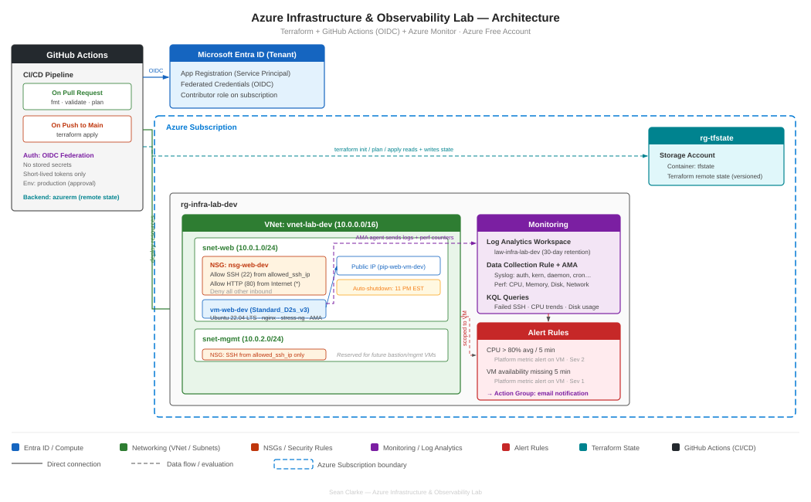

About
I'm an Azure-certified early-career IT professional and recent Rutgers IT graduate focused on cloud infrastructure, systems administration, and operational reliability. Through hands-on lab projects, I've built and documented Azure infrastructure with Terraform, monitoring and alerting workflows, GitHub Actions CI/CD, and Microsoft 365 / Intune identity and endpoint operations.
Tech Stack
Certifications
Projects
Here are a few projects that reflect my focus on cloud infrastructure, automation, monitoring, and modern IT operations.
Terraform · Azure · GitHub Actions · Log Analytics · KQL · OIDC
Terraform-managed Azure environment built to demonstrate core infrastructure deployment, observability, and CI/CD. The project includes a virtual network, subnets, NSGs, public IP, Ubuntu VM with nginx, Log Analytics ingestion through Azure Monitor Agent, CPU alerting with email notifications, and GitHub Actions workflows using OIDC instead of client secrets.

Entra ID · Intune · Conditional Access · PowerShell · Microsoft Graph
Hands-on Microsoft 365, Entra ID, and Intune lab designed to simulate day-to-day identity and endpoint operations for a small organization. The project demonstrates Conditional Access baselines, security groups, RBAC, Windows device enrollment, compliance policies, configuration profiles, app deployment, proactive remediation, and PowerShell automation with Microsoft Graph.
Contact
I'm actively building experience in cloud, infrastructure, and IT operations. Feel free to reach out if you'd like to connect about opportunities, projects, or technical work.